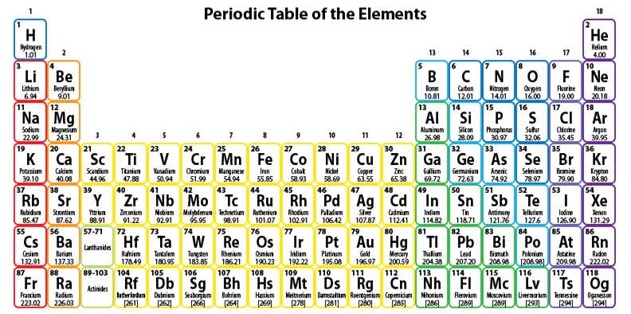

문제 3
3-1
질산(\(\text{HNO}_3\))은 비료의 생산에 많이 사용된다. 6.0 M \(\text{HNO}_3\)라고 쓰여진 라벨이 붙어 있는 질산 용액이 75 mL 들어 있는 시약병이 있다.
(1) 이 병 속에는 얼마나 많은 몰수의 질산이 있는지 계산해 보자.
(2) 이 병에 증류수를 더하여 전체 부피를 85 mL로 만들었을 때 용액의 농도(M)는 얼마가 되는지 계산해 보자.
(3) 질산의 제법에 필요한 일산화질소는 암모니아와 산소를 반응시켜 만들 수 있다. 이 화학반응식의 a, b, c, d를 구하시오.
\[a\text{NH}_3\text{(g)} + b\text{O}_2\text{(g)} \rightarrow c\text{NO(g)} + d\text{H}_2\text{O(}\ell\text{)}\]
3-2
철 27.95 g이 공기 중 산소에 의해서 완전히 산화된다고 할 때 몇 g의 산소가 철과 반응을 하게 되는가? (완전히 산화된 철의 화학식은 \(\text{Fe}_2\text{O}_3\) 이다.)
